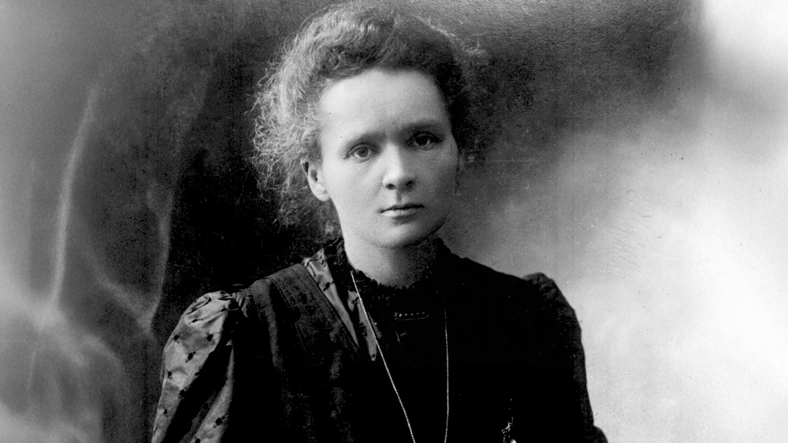
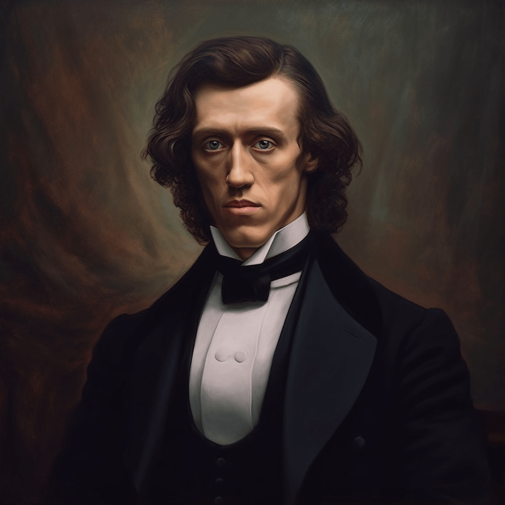
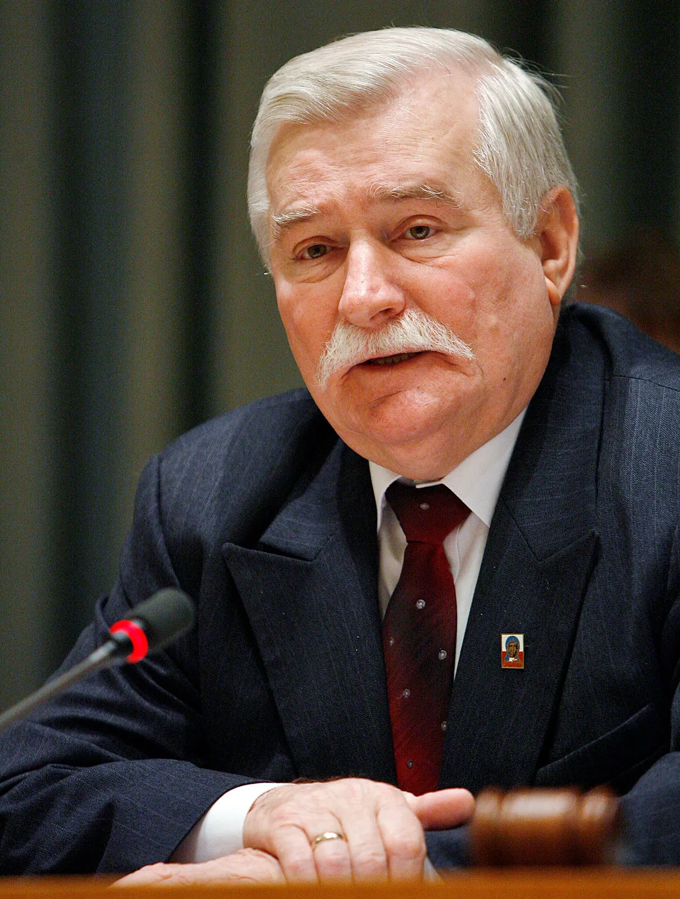

Marie Curie

Marie Curie was born in Warsaw and won two Nobel Prizes for her work on radioactivity.

Marie Curie was born in Warsaw and won two Nobel Prizes for her work on radioactivity.

Frédéric Chopin was a famous Polish composer and pianist, known for his poetic piano pieces.

Lech Wałęsa led the Solidarity movement that helped end communist rule in Poland.